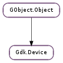

| static | grab_info_libgtk_only(display, device) |
| get_associated_device() | |
| get_axis_use(index_) | |
| get_device_type() | |
| get_display() | |
| get_has_cursor() | |
| get_key(index_) | |
| get_mode() | |
| get_n_axes() | |
| get_n_keys() | |
| get_name() | |
| get_position() | |
| get_position_double() | |
| get_source() | |
| get_window_at_position() | |
| get_window_at_position_double() | |
| grab(window, grab_ownership, owner_events, event_mask, cursor, time_) | |
| list_axes() | |
| list_slave_devices() | |
| set_axis_use(index_, use) | |
| set_key(index_, keyval, modifiers) | |
| set_mode(mode) | |
| ungrab(time_) | |
| warp(screen, x, y) |
| Name | Type | Flags | Description |
|---|---|---|---|
| associated-device | Gdk.Device | r | Associated pointer or keyboard with this device |
| device-manager | Gdk.DeviceManager | r/w/c | Device manager which the device belongs to |
| display | Gdk.Display | r/w/c | Display which the device belongs to |
| has-cursor | bool | r/w/c | Whether there is a visible cursor following device motion |
| input-mode | Gdk.InputMode | r/w | Input mode for the device |
| input-source | Gdk.InputSource | r/w/c | Source type for the device |
| n-axes | int | r | Number of axes in the device |
| name | str | r/w/c | Device name |
| type | Gdk.DeviceType | r/w/c | Device role in the device manager |
| Name | Parameters | Return | Description |
|---|---|---|---|
| changed | The ::changed signal is emitted either when the Gdk.Device has changed the number of either axes or keys. For example In X this will normally happen when the slave device routing events through the master device changes (for example, user switches from the USB mouse to a tablet), in that case the master device will change to reflect the new slave device axes and keys. |
Bases: GObject.Object
The Gdk.Device object represents a single input device, such as a keyboard, a mouse, a touchpad, etc.
See the Gdk.DeviceManager documentation for more information about the various kinds of master and slave devices, and their relationships.
| Parameters: |
|
|---|---|
| Returns: | True if this application currently has the keyboard grabbed. |
| Return type: | bool, grab_window: Gdk.Window, owner_events: bool |
Determines information about the current keyboard grab. This is not public API and must not be used by applications.
| Returns: | The associated device, or None |
|---|---|
| Return type: | Gdk.Device |
Returns the associated device to device, if device is of type Gdk.DeviceType.MASTER, it will return the paired pointer or keyboard.
If device is of type Gdk.DeviceType.SLAVE, it will return the master device to which device is attached to.
If device is of type Gdk.DeviceType.FLOATING, None will be returned, as there is no associated device.
| Parameters: | index_ (int) – the index of the axis. |
|---|---|
| Returns: | a Gdk.AxisUse specifying how the axis is used. |
| Return type: | Gdk.AxisUse |
Returns the axis use for index_.
| Returns: | the Gdk.DeviceType for device. |
|---|---|
| Return type: | Gdk.DeviceType |
Returns the device type for device.
| Returns: | a Gdk.Display. This memory is owned by GTK+, and must not be freed or unreffed. |
|---|---|
| Return type: | Gdk.Display |
Returns the Gdk.Display to which device pertains.
| Returns: | True if the pointer follows device motion |
|---|---|
| Return type: | bool |
Determines whether the pointer follows device motion.
| Parameters: | index_ (int) – the index of the macro button to get. |
|---|---|
| Returns: | True if keyval is set for index. |
| Return type: | bool, keyval: int, modifiers: Gdk.ModifierType |
If index_ has a valid keyval, this function will return True and fill in keyval and modifiers with the keyval settings.
| Returns: | a Gdk.InputSource |
|---|---|
| Return type: | Gdk.InputMode |
Determines the mode of the device.
| Returns: | the number of axes. |
|---|---|
| Return type: | int |
Returns the number of axes the device currently has.
| Returns: | the number of keys. |
|---|---|
| Return type: | int |
Returns the number of keys the device currently has.
| Return type: | screen: Gdk.Screen, x: int, y: int |
|---|
Gets the current location of device. As a slave device coordinates are those of its master pointer, This function may not be called on devices of type Gdk.DeviceType.SLAVE, unless there is an ongoing grab on them, see Gdk.Device.grab ().
| Return type: | screen: Gdk.Screen, x: float, y: float |
|---|
Gets the current location of device in double precision. As a slave device’s coordinates are those of its master pointer, this function may not be called on devices of type Gdk.DeviceType.SLAVE, unless there is an ongoing grab on them. See Gdk.Device.grab ().
| Returns: | a Gdk.InputSource |
|---|---|
| Return type: | Gdk.InputSource |
Determines the type of the device.
| Returns: | the Gdk.Window under the device position, or None. |
|---|---|
| Return type: | Gdk.Window, win_x: int, win_y: int |
Obtains the window underneath device, returning the location of the device in win_x and win_y. Returns None if the window tree under device is not known to GDK (for example, belongs to another application).
As a slave device coordinates are those of its master pointer, This function may not be called on devices of type Gdk.DeviceType.SLAVE, unless there is an ongoing grab on them, see Gdk.Device.grab ().
| Returns: | the Gdk.Window under the device position, or None. |
|---|---|
| Return type: | Gdk.Window, win_x: float, win_y: float |
Obtains the window underneath device, returning the location of the device in win_x and win_y in double precision. Returns None if the window tree under device is not known to GDK (for example, belongs to another application).
As a slave device coordinates are those of its master pointer, This function may not be called on devices of type Gdk.DeviceType.SLAVE, unless there is an ongoing grab on them, see Gdk.Device.grab ().
| Parameters: |
|
|---|---|
| Returns: | Gdk.GrabStatus.SUCCESS if the grab was successful. |
| Return type: |
Grabs the device so that all events coming from this device are passed to this application until the device is ungrabbed with Gdk.Device.ungrab (), or the window becomes unviewable. This overrides any previous grab on the device by this client.
Device grabs are used for operations which need complete control over the given device events (either pointer or keyboard). For example in GTK+ this is used for Drag and Drop operations, popup menus and such.
Note that if the event mask of an X window has selected both button press and button release events, then a button press event will cause an automatic pointer grab until the button is released. X does this automatically since most applications expect to receive button press and release events in pairs. It is equivalent to a pointer grab on the window with owner_events set to True.
If you set up anything at the time you take the grab that needs to be cleaned up when the grab ends, you should handle the Gdk.EventGrabBroken events that are emitted when the grab ends unvoluntarily.
| Returns: | A GLib.List of Gdk.Atom s, free with GLib.List.free (). |
|---|---|
| Return type: | [Gdk.Atom] |
Returns a GLib.List of Gdk.Atom s, containing the labels for the axes that device currently has.
| Returns: | the list of slave devices, or None. The list must be freed with GLib.List.free (), the contents of the list are owned by GTK+ and should not be freed. |
|---|---|
| Return type: | [Gdk.Device] |
If the device if of type Gdk.DeviceType.MASTER, it will return the list of slave devices attached to it, otherwise it will return None
| Parameters: |
|
|---|
Specifies how an axis of a device is used.
| Parameters: |
|
|---|
Specifies the X key event to generate when a macro button of a device is pressed.
| Parameters: | mode (Gdk.InputMode) – the input mode. |
|---|---|
| Returns: | True if the mode was successfully changed. |
| Return type: | bool |
Sets a the mode of an input device. The mode controls if the device is active and whether the device’s range is mapped to the entire screen or to a single window.
| Parameters: | time_ (int) – a timestap (e.g. Gdk.CURRENT_TIME ). |
|---|
Release any grab on device.
| Parameters: |
|
|---|
Warps device in display to the point x,`y` on the screen screen, unless the device is confined to a window by a grab, in which case it will be moved as far as allowed by the grab. Warping the pointer creates events as if the user had moved the mouse instantaneously to the destination.
Note that the pointer should normally be under the control of the user. This function was added to cover some rare use cases like keyboard navigation support for the color picker in the #GtkColorSelectionDialog.